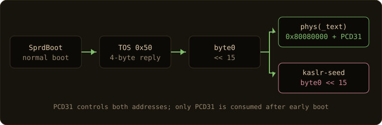
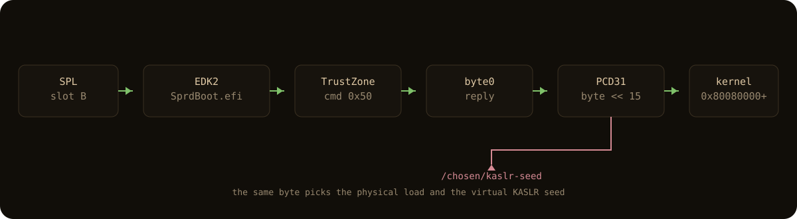

Rooting series: GhostLock on a Unisoc T8300
Per-boot P0 derivation, QEMU parity, and two incident records

CVE-2026-43499, the futex priority-inheritance stack use-after-free, is a fifteen-year-old Linux bug with a public, hardware-verified 6.6 exploit. The interesting part of this project is not the bug. It is the one thing that does not port cleanly to a Unisoc T8300: the physical address where the bootloader dropped the kernel image. That address changes on every boot, and the exploit needs it to write the forged file_operations table. This writeup is about deriving that address from a KASLR leak, proving the chain in QEMU first, and the two panics that followed when we tried to turn a per-boot root into something more.
TL;DR
On a locked, verified-boot Redmi A7 Pro 5G ( somalia, Unisoc T8300, Android 16, kernel 6.6.118-android15), the public GhostLock chain took a uid-2000 shell to a uid-0 kernel credential patch on three separate boots. The boot image was never modified. The device-specific piece is the physical load address, P0Per-boot physical loadThe loader places the kernel at 0x80080000 + (byte << 15). The byte changes each boot, so P0 has to be derived, not baked in. Read the derivation notes: the vendor loader places the kernel at
Read the derivation notes: the vendor loader places the kernel at 0x80080000 + (TOS byte << 15), where the TOS byteTrustZone command 0x50SprdBoot reads byte 0 of the reply, shifts it by 15, and sets PCD31. The same value seeds /chosen/kaslr-seed, which is why the KASLR slide can recover it./chosen/kaslr-seed. Because the kernel encodes the low 21 bits of the physical placement into its virtual KASLR slide, the same tracefs leak the chain already needs for the virtual slide also yields P0. There is no brute force and no serial port. Root is per-boot. Two later builds panicked the kernel; both are written up.
The device and the threat model
The target is a retail Redmi A7 Pro 5G, codename somalia, Unisoc T8300 (UMS9632), two Cortex-A78 and six Cortex-A55 cores, Mali-G57 MC2, 4 GB of RAM, 128 GB of UFS storage, Android 16 with the 2026-08-01 security patch. It is a user build: ro.debuggable=0, ro.secure=1, and adb root is refused.
The security posture is the interesting part. The bootloader is locked, verified boot is green, and AVB is at version 1.3. Eight erofs volumes are mounted read-only through dm-verity. The device is A/B, but slot A is unbootable (tries_remaining: 0), so slot B is the only Android boot path, and the misc partition held a pending one-shot bootloader command. Every reboot carried the risk of landing in the bootloader instead of Android. That single constraint shaped the entire engagement: anything that panicked the kernel also risked the last good boot path.
The kernel is 6.6.118-android15, built from the source commit that appears in the banner. CONFIG_FUTEX_PI=y, KASLR on, KCFI on, kptr_restrict=2, CONFIG_STRICT_KERNEL_RWX=y, CONFIG_HARDENED_USERCOPY=y. CONFIG_USER_NS is off, which closes a class of container-based escalations. The shell process runs as uid 2000 with a readtracefs group membership that turns out to matter.
The work was read-only by default and owner-authorized per session, in writing. No partition was written, no bootloader was unlocked, and no boot image was modified. The payload writes only in-memory kernel state. The one persistent userspace change outside /data/local/tmp was an ADB public-key append under /data/misc/adb, made with a backup, for the wireless bootstrap; the backup restores it.
The public CVE, and who owns the technique
This repository does not claim discovery. GhostLock is CVE-2026-43499, described by NebuSec in "IonStack Part II: GhostLock" and public since 2026-05-21 at NVD and MITRE. The bug is in remove_waiter() in the futex priority-inheritance path. The vulnerable version locks current->pi_lock and clears current->pi_blocked_on, but in the FUTEX_CMP_REQUEUE_PI rollback path current is the requeuer, not the waiter. The waiter returns to userspace with a stale pi_blocked_on pointer into a kernel stack frame that has already been freed. The public framing is "present in all Linux distributions for 15 years," which is why the bug is more interesting than the phone.
The chain I used is the public one, adapted for aarch64 by JingMatrix/pixel-ksu-root at commit 65762e7, with the OnePlus device matrix from JoinChang/ghostlock-oneplus and the heap-pointer side channel ideas from KernelSnitch (TU Graz). What this project adds on top is a Unisoc T8300 port, the per-boot P0 derivation, a QEMU parity lab, and the two incident records. The credits are in NOTICE and the full list is in the references section at the end.
The exploit path
The chain on this device, in order:
Leak the virtual KASLR base. A plain
shellwrites a marker totrace_marker, then readsper_cpu/cpu0/trace_pipe_raw. The record'sipfield holds the value of_THIS_IP_insidetracing_mark_write(). Subtracting the per-image offset0x1f4cccgives_text. This works becausetrace_markeris world-writable, the shell is in thereadtracefsgroup, and the raw pipe is not filtered bykptr_restrict.Derive P0 from that slide. This is the device-specific step and the subject of the next section.
Trigger the futex UAF. Three threads and three futex words reproduce the
FUTEX_CMP_REQUEUE_PIdeadlock cycle, so the kernel returns-EDEADLKand runs the rollback that frees a waiter while a dangling pointer survives.Reclaim the freed waiter stack with
pselect6. A largefd_setis copied onto the stack slot left by the deadrt_mutex_waiter. The descriptor bytes are attacker-controlled, so the next PI chain walk reads them as waiter fields.Turn the rb-tree erase into an arbitrary write. The unlink writes a chosen value to a chosen kernel address. The target is the
fopspointer in theashmemmiscdevice, aimed through the physical alias that P0 provides.Forge the
ashmemfile_operations. The fake table's slots are not user code. They are addresses of genuine kernel functions: configfs read and write iterators,copy_splice_read,noop_llseek. That is what keeps the table alive under KCFI, which checks indirect call targets against type hashes.Open
/dev/ashmemthrough the forged table, giving a kernel read/write primitive.Promote that to a pipe-based physical read/write, then patch the root child's
credandreal_cred: uid and gid to 0, capability sets filled, seccomp cleared, SELinux SID set to the kernel SID.Write
selinux_state.enforcing = 0. The device reports Permissive until the next reboot.
The result is a kernel credential patch in the exploit's child, not an interactive root shell. A fresh adb shell id is still uid 2000. To keep a uid-0 process alive for recon, a second run starts an abstract-socket root server from that child before it exits; the server is reparented to init and lives for the rest of the boot.

Per-boot P0: the derivation
This is the contribution worth reading closely, because it is what made the port work at all.
The upstream Pixel exploit assumes the kernel image sits at a compile-time physical address. On this Unisoc boot chain there is no U-Boot environment and no kernel_addr_r. The kernel is loaded by SprdBoot.efi inside an EDK2 firmware volume, and the load address is chosen at runtime.

On a normal boot, SprdBoot.efi calls the TrustZone protocol with command 0x50 and a 4-byte output buffer. It reads only the first byte of the reply, shifts it left by 15, and writes the result to PCD token 31. That value is then used in three places: the kernel read destination, the entry PC, and the DTB property /chosen/kaslr-seed. In other words:
PCD31 = byte0 << 15
phys(_text) = 0x80080000 + PCD31
kaslr-seed = byte0 << 15The byte is a random value in 0..255, so the physical load ranges from 0x80080000 to 0x80878000 in 32 KiB steps. The base 0x80080000 is not 2 MiB aligned. Two fixed-P0 attempts earlier in the project used 0x80000000 and 0x80200000; the first is always below the loader base, and the second is only correct for one byte out of 256. Both missed for that reason, not because of a lost race.
The key insight is that the same byte seeds the virtual KASLR, and the arm64 kernel places the low 21 bits of the physical load into the virtual slide. The source states it directly: the KASLR offset modulo MIN_KIMG_ALIGN comes from physical placement, not from the seed. head.S ORs the identity-mapped physical low bits into the offset, and MIN_KIMG_ALIGN is 2 MiB. So the low 21 bits of the slide are the low 21 bits of the physical load, and the high 2 bits of the byte are visible in (slide >> 21) & 3.
Given the leaked _text, the derivation is exact, no brute force:
KIMAGE_VADDR = 0xffffffc080000000
slide = leaked_text - KIMAGE_VADDR
byte = (((slide >> 21) & 3) << 6) | \
((((slide & 0x1fffff) - 0x80000) & 0x1fffff) >> 15)
P0 = 0x80080000 + (byte << 15)The sanity checks are 0x80080000 <= P0 <= 0x80878000 and (P0 - 0x80080000) % 0x8000 == 0. The script scripts/ghostlock_p0_from_slide.py does the arithmetic.
The firmware side of this is verified by disassembly, not assumption. SprdBoot.efi calls a TOS-random helper on the normal boot path. That helper allocates a page, calls TrustZone with command 0x50 and a 4-byte reply, reads only byte 0, and writes byte << 15 to PCD token 31. The other three reply bytes are discarded. PCD 31 is then read in three places: the kernel read destination, the entry PC, and the DTB property writer that emits /chosen/kaslr-seed as the byte-swapped value. The kernel's kaslr_early_init consumes and zeroes that property, so it is not recoverable after early boot. This is why a static analysis of the OTA images cannot produce P0, and why the live slide is the only surviving copy.
The worked examples line up with the recorded roots:
Leaked _text |
Slide | TOS byte | P0 | Result |
|---|---|---|---|---|
0xffffffd080628000 |
0x1000628000 |
0xf5 |
0x80828000 |
first root |
0xffffffd080720000 |
0x1000720000 |
0xd4 |
0x80720000 |
re-root after the debugfs panic |
0xffffffd0801f0000 |
0x10001f0000 |
0x2e |
0x801f0000 |
re-root after the binder panic |
The middle values also explain the failed fixed-P0 attempts. The second fixed run used 0x80200000, but that boot's load was 0x80368000, off by 0x168000. The forge write landed on the wrong physical page. It was never a timing problem.
The first derived-P0 run leaked _text = 0xffffffd080628000, slide 0x1000628000, which gives byte 0xf5 and P0 0x80828000. The payload built with that value captured on the first attempt: 56 seconds, no panic. After the fact, two independent root-only reads confirmed the value: uboot_log contains the line Start linux at PC:0x80828000, and /proc/iomem reports Kernel code at 0x80838000, exactly _text + 0x10000. Neither read was needed for the exploit; the tracefs leak produced the value first.
The derivation is per boot. The TOS byte is not in the OTA images, the DTB seed is zeroed by the kernel early on, and /proc/iomem is denied to shell. The only surviving copy of the value is the live slide. The runtime launcher closes the loop by leaking KASLR, computing P0 in the payload, and running, so no host-side rebuild is needed on the next boot.
The QEMU lab and KCFI
Running a kernel exploit blind on a device with one bootable slot is a bad idea. Before any phone run, the chain was validated in a QEMU lab.
The exact vendor Image boots under QEMU to /init, and it reproduces the tracefs leak in-VM. A source-parity GKI 6.6.118 build at the same banner commit also boots, with a different clang/config that changes the _THIS_IP_ offset from the vendor's 0x1f4ccc to 0x19ac64. That difference is why the offset is part of the target header, not a universal constant. The stock chain reaches a full uid-0 credential patch in-VM on attempt 1.
The lab settled two things that the phone runs depended on. First, KCFIKernel Control-Flow IntegrityKCFI checks an indirect call target against the call site type hash. The fake fops slots are genuine kernel functions of the right type, so the table is valid without disabling the mitigation.Clang CFI documentation: the forged fops table passes because every slot is a real kernel function with the right type hash, not because KCFI is absent. Second, the pselect retry logic: an in-process refresh after a CFI miss stalls in a slow second groom, and a process-wide SIGALRM watchdog is unusable across threads. The accepted fix is one pselect attempt per process, with the outer loop re-forking a fresh first groom. That is the pselect-attempts1.patch in the port material.
The lab also caught a harness bug before it could waste a phone run: a umask(0) issue on /dev/ashmem inside the initramfs made an open fail look like an exploit failure. The root cause was the lab init, not the chain.
Failures
The first track on this device was not GhostLock. It was a Mali GPU driver use-after-free in kbase_do_syncset(), a per-context shrinker race in the shipped r54p1 module. The race was real: two controlled crash-oracle runs panicked the kernel in kbase_sync_single reading a poisoned struct page. That validated the bug but did not produce a write primitive, and it did not answer the question of which CVE it maps to. Rather than keep crashing the daily driver for a primitive that was not materializing, the project pivoted to GhostLock, a chain with a public, working write primitive and a shorter path to credential modification.
The fixed-P0 misses were the next failure. Two phone runs used 0x80000000 and 0x80200000. Both reached the CFI open step and then missed, because the forged write landed on the wrong physical page. The P0 firmware audit explained both: 0x80000000 is below the loader base, and 0x80200000 is correct for exactly one of 256 possible TOS bytes. A wrong P0 presents as a silent miss, which is easy to mistake for a lost race. The derivation removed that failure mode.
Then came the two real incidents, in the next section.
Results: root, per boot
| What | Status |
|---|---|
uid-0 kernel cred patch (uid 2000 -> 0) |
demonstrated on three boots |
| Full capability set | demonstrated |
| SELinux Permissive for the boot | demonstrated, in memory only |
Root socket server as uid 0 (u:r:kernel:s0) |
demonstrated, per-boot |
| On-device Termux wireless ADB bootstrap | demonstrated, per-boot |
Private su/sudo over a private socket |
demonstrated, under observation |
Persistent su or a boot-image change |
not done |
| Cross-reboot persistence | none |
The three boots, in order: the first derived-P0 root (P0 0x80828000, 56 seconds, one pselect attempt), the re-root after the debugfs panic (P0 0x80720000), and the re-root after the binder panic (P0 0x801f0000, the selective-fd fix). The current state is that last one, and it is under observation, not proven stable.
What "root" means here is narrow and worth restating. It is a kernel credential patch in the exploit's child, plus an in-memory write of one SELinux byte. It is not a persistent su, not a mounted root filesystem, not a package install, and not a boot-image modification. A reboot restores Enforcing, changes P0, and drops every root server. Nothing survives the boot as root.
Incidents
Two panics are recorded as first-class documents, because they are where the per-boot nature of this work bites.
The first was a debugfs read. After the first root, a read-only recon pass mounted debugfs (an authorized state change) and read clk_summary and regulator_summary. The device panicked with a synchronous external abort, a fatal exception, and self-rebooted. Root, Permissive, and P0 were all lost, because all three are per-boot. The unit booted Android again on slot B, so the panic did not brick anything, but it established that those specific debugfs summaries are off-limits on this unit. They stay that way.
The second was a binder thread teardown panic. After a re-root, a dual-socket build was installed that added a private Termux su/sudo path alongside the abstract-socket root server. It passed its smoke tests: su -c id returned uid 0 through the private socket, the Termux app UID was denied on the abstract socket, and host forwarding worked. Then the device panicked during cleanup:
pc : module_put+0x18/0x12c
lr : __fput+0xc4/0x2b8
Comm: binder:1234_7module_put was called from __fput on a file whose f_op->owner was a corrupted, non-kernel pointer. The task was a binder thread, not the root server. The suspected cause is the new close_inherited_fds() in the server: it closed inherited exploit fds, and one of those could carry a forged fops table into the teardown path. That is a plausible trigger, not a proven one. A latent GhostLock forged-fops collateral panic cannot be excluded, and the delayed, binder-thread timing makes a single attribution unsafe.
The fix changed the server to close only pipe and regular fds, not char/ashmem/socket fds. Re-rooted on the new boot, P0 0x801f0000, and both channels work: the private ~/.gl/root.sock for su -c id, and the abstract @ghostlock-root for host forwarding. No new panic appeared in the short watch window. The fix is under observation, not proven stable, and the prior dual-socket build remains do-not-use.
Limitations
- Root is per-boot. Nothing survives a reboot as root, by design of the locked bootloader and AVB.
- The selective-fd fix is under observation. The build it replaced panicked in
module_put, and a short clean window is not proof of stability. - Single device. There is no second unit and no cross-device reproducibility.
- No full off-device backup exists, so crash-only work stays blocked on this unit.
- debugfs
clk_summaryandregulator_summaryreads are off-limits; they panicked the unit. - Slot A is unbootable. Slot B is the only Android boot path, which is why every reboot and every panic is treated as a recovery risk.
Ethics and disclosure
CVE-2026-43499 is public. The NVD entry was published 2026-05-21, the finder's writeup is dated 2026-07-07, and the bug is broadly discussed. This repository adds one device-specific result on top of a public bug, not a new disclosure.
The work was done on a device the owner owns, under per-session written authorization, with a read-only default posture. The repository publishes no weaponized tool, no prebuilt .so for other devices, and no firmware. The boot IDs, P0 values, and incident records in this tree are audit evidence for one unit, not a how-to for another. If you use any of this, use it on hardware you own, and read SECURITY.md first.
Timeline
| Date | Event |
|---|---|
| 2026-10-22/23 | Firmware extracted; Mali kbase_do_syncset() page-UAF race validated with two controlled panics; write primitive blocked; pivot to GhostLock |
| 2026-10-23 | Current-boot KASLR leak validated through tracefs |
| 2026-10-23 | QEMU lab boots the exact vendor Image; stock chain reaches full root in-VM |
| 2026-10-23 | Two fixed-P0 phone runs miss (wrong physical target) |
| 2026-10-23 | P0 formula derived from the tracefs slide |
| 2026-10-23 | First root, P0 0x80828000, 56 seconds, no panic |
| 2026-10-23 | Persistent root socket and recon; slot A found unbootable |
| 2026-10-23 | debugfs clk_summary/regulator_summary read panics the unit; root lost |
| 2026-10-24 | Re-root on the new boot, P0 0x80720000; self-contained runtime-P0 launcher |
| 2026-10-24 | On-device Termux wireless ADB bootstrap |
| 2026-10-24 | Dual-socket su build panics in module_put; reboot |
| 2026-10-24 | Selective-fd fix; re-root, P0 0x801f0000; under observation |
The full, dated journey is in TIMELINE.md.
References
- NebuSec, "IonStack Part II: GhostLock", https://nebusec.ai/research/ionstack-part-2/ (primary)
- NebuSec/CyberMeowfia, https://github.com/NebuSec/CyberMeowfia
- JingMatrix/pixel-ksu-root, commit
65762e7 - JoinChang/ghostlock-oneplus
- Linuxoid-cn/CVE-2026-43499-Poc-Analysis
- KernelSnitch, Lukas Maar et al., TU Graz, NDSS 2025
- NVD CVE-2026-43499, MITRE CVE-2026-43499
- Hacker News thread, https://news.ycombinator.com/item?id=48834309
Details, offsets, and the sanitized evidence trail are in docs/, reference/, and evidence/.